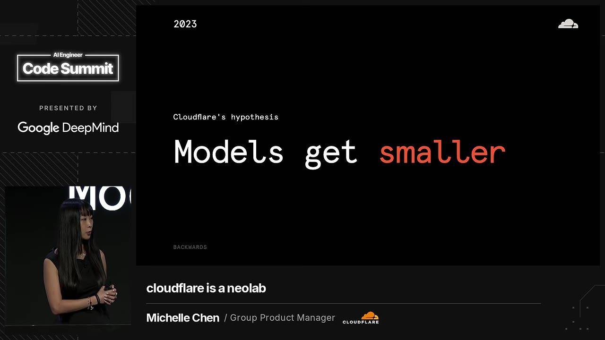
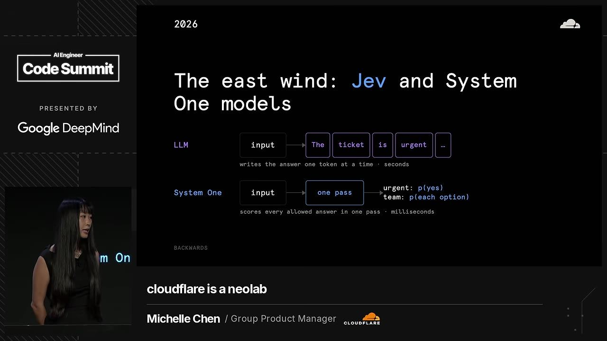
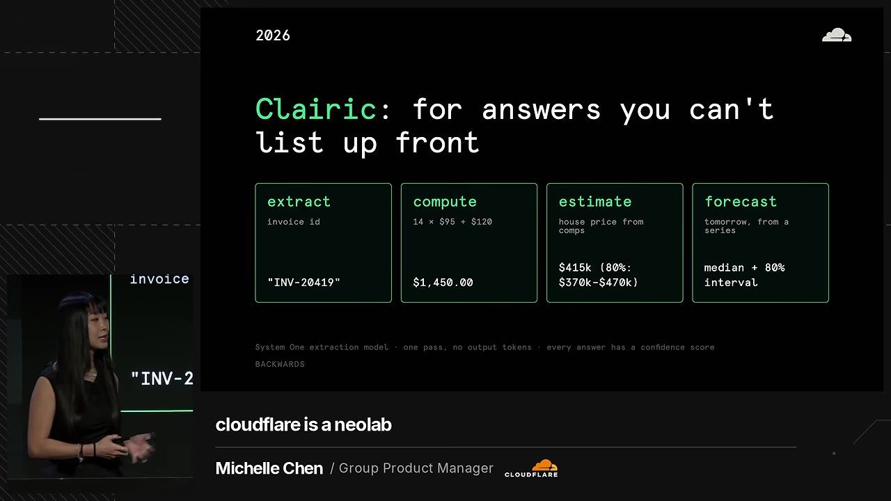
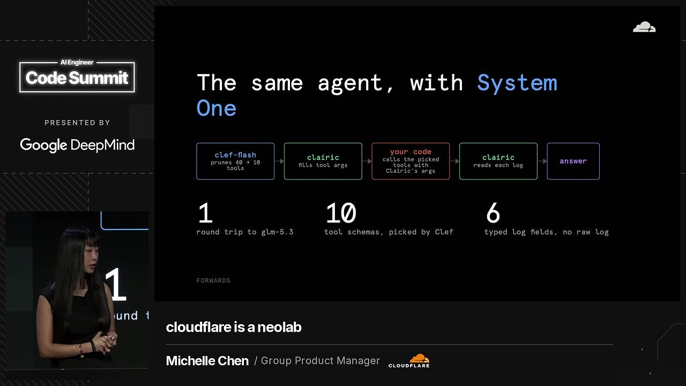
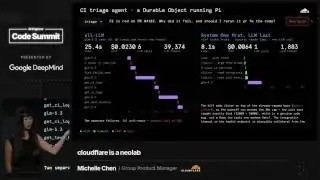

essencial do dia: Mostra a arquitetura híbrida num agente real, com o modelo pequeno podando ferramentas e lendo logs antes do LLM agir.
Modelos System 1 e LLMs juntos em agentes
Why Cloudflare Became a Neolab
Modelos System 1 de um único passe assumem as decisões baratas do agente e deixam o LLM só para o raciocínio que importa.
Depois deste talk você consegue desenhar um fluxo de agente em que modelos rápidos podam ferramentas, extraem dados e encurtam logs antes de chamar o LLM
Em 3 frases
A Cloudflare apostou que os modelos ficariam menores, errou quando eles chegaram a trilhões de parâmetros e passou a servir modelos grandes na sua plataforma de agentes.
Quando surgiu o conceito de modelo System 1, que responde com uma única passada pela rede, a empresa treinou o próprio (Clef) em 48 horas e lançou o Cleric, de extração, três semanas depois.
Numa demo de triagem de falha de CI, a combinação de modelos System 1 com um LLM ficou cerca de 2 vezes mais rápida e 72% mais barata, com a mesma resposta final.
Antes de ler
- System 1 model modelo System 1, que responde em uma única passada pela rede
- System 2 thinking pensamento lento e deliberado
- Decision model modelo barato que devolve rótulo e probabilidade analogia no glossário
- Extraction model modelo de extração, que transforma texto livre em JSON tipado
- Cloudflare Workers plataforma de execução de código em borda, com banco D1 e KV analogia no glossário
- Scaling law lei de escala: mais dados e computação reduzem a perda analogia no glossário
A aposta errada que virou pivô
A Cloudflare lançou o Workers AI em 2023 com GPUs espalhadas pela rede, apostando em modelos pequenos e em latência de rede decisiva. Os modelos cresceram de 7 bilhões para cerca de 3 trilhões de parâmetros. A empresa passou a servir modelos como Kimi, GLM e DeepSeek em março de 2026, o que encaixou na sua plataforma de agentes.


(ampliar imagem)System 1: uma passada, uma decisão
Um LLM autorregressivo gera token por token e gasta muito tempo e dinheiro. Um modelo System 1 faz uma única passada pelas entradas e devolve uma saída que serve para decidir. Os dois trabalham juntos: o modelo pequeno tira trabalho do grande, que fica com as tarefas que exigem raciocínio.


(ampliar imagem)Clef decide e Cleric extrai
O Clef dá ao agente decisões programáveis, sem esperar minutos de raciocínio nem um humano no circuito. O Cleric é um modelo de extração. Ele lê e-mails, mensagens ou imagens sem estrutura e devolve objetos JSON tipados, que o agente usa direto. A empresa lançou quatro modelos em três semanas.


(ampliar imagem)Mais 2 ideias deste talk
Triagem de CI com 40 ferramentas
No fluxo só com LLM, cada volta reenvia as 40 ferramentas e o contexto inteiro. No fluxo híbrido, o Clef Flash reduz a lista para cerca de 10 ferramentas, o Cleric extrai o número do PR e lê os logs de centenas de linhas, e o LLM só age no fim. O contexto encolhe muito.


(ampliar imagem)O gráfico de cascata da demo
Na demo ao vivo, o lado System 1 terminou antes e as barras roxas de geração do LLM dominavam o outro lado. Segundo a palestrante, as duas versões chegaram à mesma resposta. Ela mostra 6 chamadas de LLM contra 1 e 40 mil tokens contra 1.800.


(ampliar imagem)A palestrante é gerente de produto da Cloudflare e vende os modelos que a empresa acabou de lançar. A demo é um único caso ilustrativo, ao vivo e com Wi-Fi ruim, e os números finais vêm de uma execução feita fora do palco. As contagens de chamadas divergem (6 contra 1 no palco, 5 contra 1 depois). Não há amostra maior nem teste de qualidade em vários casos, e a frase "a mesma resposta" não é medida por métrica. O custo de 72% também não mostra o preço de cada modelo.
Teste você mesmo
Responda de cabeça antes de abrir. Lembrar com esforço é o que fixa.
- lembrar O que diferencia um modelo System 1 de um LLM autorregressivo, segundo a palestrante?
Ver resposta
O modelo System 1 faz uma única passada pelas entradas e gera uma saída para decidir. O LLM gera tokens um a um, o que leva mais tempo e custa mais.
- aplicar No seu agente, que três etapas você poderia tirar do LLM e dar a modelos rápidos, seguindo o fluxo da demo de CI?
Ver resposta
Podar a lista de ferramentas, extrair campos como o número do PR de um texto e achar o erro dentro de logs longos. O LLM fica só com a decisão final e a ação.
- criticar Por que o resultado de 72% mais barato e 94% menos tokens ainda não basta para você adotar a abordagem?
Ver resposta
Vem de uma única demo, apresentada por quem vende os modelos, sem métrica de qualidade e com contagens de chamadas que divergem. Você precisa repetir em seus casos e medir acerto.
Encurtar logs antes do LLM e comparar
Você precisa de: Claude ou ChatGPT, um log de falha de CI com centenas de linhas e uma planilha.
- Cole o log inteiro no modelo e peça a causa do erro. Anote tokens de entrada, tempo e a resposta.
- Em uma conversa nova, peça a um modelo menor só o trecho do erro e as linhas afetadas, em JSON com os campos mensagem e linhas.
- Envie ao modelo principal apenas esse JSON e peça a causa do erro. Anote tokens, tempo e a resposta.
- Repita com 3 logs diferentes e registre tudo numa planilha com as duas abordagens lado a lado.
Deu certo se: Você tem uma tabela com tokens, tempo e correção da resposta nos dois fluxos e sabe dizer em que casos a versão encurtada manteve a mesma causa.
O que fazer com isso
- Liste as chamadas de LLM do seu agente e marque as que só escolhem ferramenta, extraem um campo ou resumem log, pois são candidatas a um modelo menor.
- Meça tokens de entrada, tempo e custo de uma tarefa recorrente do seu agente antes de mudar qualquer coisa, para ter uma linha de base comparável.
- Pode a lista de ferramentas enviada ao modelo para só as relevantes à tarefa e compare a taxa de acerto com a lista completa.
Conversa com outros talks
- complementa Modelos de decisão recursivos no lugar de LLMs · Aplica a divisão System 1 e System 2 a um agente de triagem de CI, com modelos treinados pela própria Cloudflare.
- Modelos de decisão recursivos no lugar de LLMs · 10 nov · em comum: Decision model, System 2 thinking
- Quando trocar o LLM por um modelo de decisão · 27 nov · em comum: Decision model, Latência
- Onde modelos de visão ainda raciocinam mal · 23 set · em comum: System 2 thinking